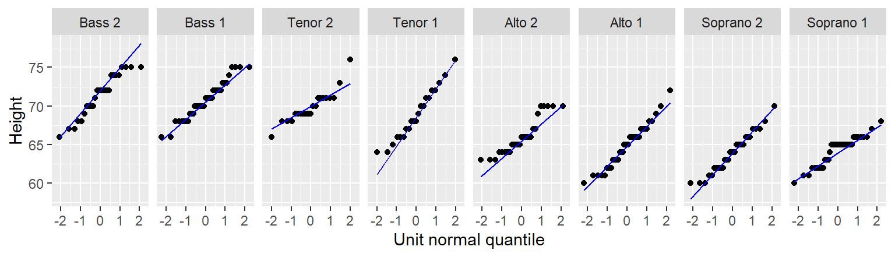
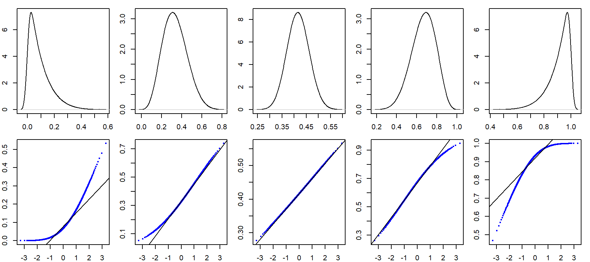

| dplyr | ggplot2 | lattice | tukeyedar |
|---|---|---|---|
| 1.1.4 | 3.4.4 | 0.22.5 | 0.2.1 |
18 The theoretical q-q plot
18.1 Introduction
Thus far, we have used the quantile-quantile plots to compare the distributions between two empirical (i.e. observational) datasets–hence the name empirical q-q plot. We can also use the q-q plot to compare an empirical distribution to a theoretical distribution (i.e. one defined mathematically). Such a plot is usually referred to as a theoretical Q-Q plot. Examples of popular theoretical distribution are the normal distribution (aka the Gaussian distribution), the chi-square distribution, and the exponential distribution just to name a few.

There are many reasons we might want to compare empirical data to theoretical distributions:
A theoretical distribution is easy to parameterize. For example, if the shape of the distribution of a batch of numbers can be approximated by a normal distribution we can reduce the complexity of our data to just two values: the mean and the standard deviation.
If data can be approximated by certain theoretical distributions, then many mainstream statistical procedures can be applied to the data.
In inferential statistics, knowing that a sample was derived from a population whose distribution follows a theoretical distribution allows us to derive certain properties of the population from the sample. For example, if we know that a sample comes from a normally distributed population, we can define confidence intervals for the sample mean using a t-distribution.
Modeling the distribution of the observed data can provide insight into the underlying process that generated the data.
But very few empirical datasets follow any theoretical distributions exactly. So the questions usually ends up being “how well does theoretical distribution X fit my data?”
The theoretical quantile-quantile plot is a tool to explore how a batch of numbers deviates from a theoretical distribution and to visually assess whether the difference is significant for the purpose of the analysis. In the following examples, we will compare empirical data to the normal distribution using the normal quantile-quantile plot or normal q-q plot for short.
18.2 The normal q-q plot
The normal q-q plot is just a special case of the empirical q-q plot we’ve covered in the previous chapter, the difference being that we assign the empirical quantiles to the y-axis and the matching normal quantiles to the x-axis.
When comparing a batch of numbers to a theoretical distribution on a q-q plot, we are looking for significant deviation from a straight line. To make it easier to judge straightness, we can fit a line to the points. Note that we are not creating a 45° (x=y) slope as was done with the empirical q-q plot–the range of values between both sets of numbers do not match. Here, we are only seeking the straightness of the point pattern.
We’ll first learn how to generate this plot using the built-in R function, then we’ll do the same with ggplot2.
18.2.1 Using R’s built-in functions
In the following example, we’ll compare the Alto 1 group to a normal distribution.
library(dplyr)
df <- lattice::singer
alto <- df %>%
filter(voice.part == "Alto 1") %>%
pull(height)Note that alto is a single vector element. We’ll use two built-in functions to generate a normal q-q plot: qqnorm and qqline.
qqnorm(alto)
qqline(alto, qtype = 5)There are many ways one can fit a line to the data, Cleveland opts to fit a line to the first and third quartile (IQR) of the q-q plot (this is the method we adopted by setting qtype = 5 in the call to qqline).
18.2.2 Using the ggplot2 plotting environment
To generate the theoretical q-q plot, we first use the stat_qq function to generate the point plot, then we call the stat_qq_line function to generate the IQR fit.
library(ggplot2)
ggplot() + aes(sample = alto) + stat_qq(distribution = qnorm) +
stat_qq_line(col = "blue") +
xlab("Unit normal quantile") + ylab("Height")
Note the slight difference in syntax used with ggplot when passing a vector instead of a dataframe to the function. Here, we take the aes() function outside of the ggplot() function. This is done to render a cleaner syntax. The alternative, ggplot(,aes(sample = alto)), would make it difficult to notice the comma thus increasing the chance for a typo.
The stat_qq_line function uses the built-in quantile function and as such will adopt the default quantile type 7 (i.e. it computes the f-value as \((i - 1)/(n - 1))\). This differs from Cleveland’s approach to computing the f-value. This explain the slight difference in the fitted line between the ggplot method and the base method where we set qtype to 5. This setting cannot be changed in stat_qq_line.
Note that geom_qq and geom_qq_line functions are identical to stat_qqand stat_qq_line.
18.3 How normal is my dataset?
The alto batch of values seem to do a good job in following a normal distribution given how well they follow a straight line. The stair-step pattern in the points is simply a byproduct of the rounding of height values to the nearest inch. A few observations at the tail ends of the distribution deviate from normal, but this is to be expected given that tail ends of distributions tend to be noisy.
So how do the other singer groups compare to a normal distribution? We’ll make use of ggplot’s faceting function to generate all eight normal q-q plots.
ggplot(df, aes(sample=height)) + stat_qq(distribution=qnorm) +
stat_qq_line( col = "blue") +
xlab("Unit normal quantile") + ylab("Height") +
facet_wrap(~voice.part, nrow = 1)
For the most part, all eight batches appear to follow a normal distribution.
18.4 What would a dataset pulled from a normal distribution look like?
Simulations are a great way to develop an intuitive feel for what a dataset pulled from a normal distribution might look like in a normal q-q plot. You will seldom come across perfectly normal data in the real world. Noise is an inherent part of any underlying process. As such, random noise can influence the shape of a q-q plot despite the data coming from a normal distribution. This is especially true with small datasets as demonstrated in the following example where we simulate five small batches of values pulled from a normal distribution. The rnorm function is used in this example to randomly pick a number from a normal distribution whose mean is set to the mean of the alto values and whose standard deviation is set to the standard deviation of the alto values. We also round the values to mimic the rounding of height values observed in the singer dataset.
set.seed(321) # Sets random generator seed for consistent output
# Simulate values from a normal distribution
sim <- data.frame(sample = paste0("Sample",1:5),
value = round(rnorm(length(alto)*5,
mean = mean(alto), sd = sd(alto))))
# Generate q-q plots of the simulated values
ggplot(sim, aes(sample = value)) + stat_qq(distribution = qnorm) +
stat_qq_line(line.p = c(0.25, 0.75), col = "blue") +
xlab("Unit normal quantile") + ylab("Simulated normals") +
facet_wrap(~ sample, nrow = 1) 
Of the five simulated batches, Sample3 generates a textbook normal q-q plot that one would expect from a normally distributed batch of values. Sample2 could lead one to question whether the data were pulled from a normal distribution, even though we know that they were!
The singer height normal q-q plots do not look different from some of these simulated plots. In fact, they probably look more Normal then the simulated set of values! This lends confidence in our earlier verdict that the singer height distributions can be characterized by a normal distribution.
18.5 How normal q-q plots behave in the face of skewed data
It can be helpful to simulate distributions of difference skewness to see how a normal quantile plot may behave. In the following figure, the top row shows different density distribution plots; the bottom row shows the normal q-q plots for each distribution.

18.6 The eda_qq function
You were introduced to the eda_qq custom function in the previous chapter. This function can also be used to generate normal q-q plots by setting norm to TRUE. In such a case, the function takes as input a single vector of values.
library(tukeyedar)
eda_qq(alto, norm=TRUE) 
The function defaults to the quantile type 5. To adopt the default quantile type used in ggplot2, set q.type = 7.
Note that when the eda_qq function is used to generate a normal q-q plot, the light dashed lines highlight the standard deviation for both sets of values. This differs from the mid 80% representation of values adopted by the function when generating an empirical q-q plot.